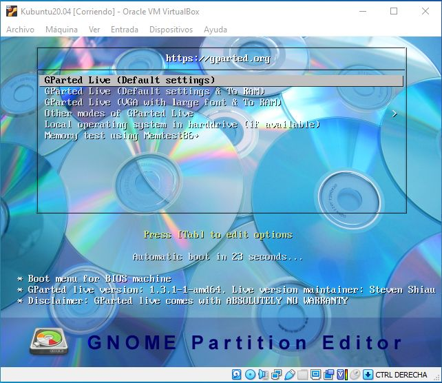
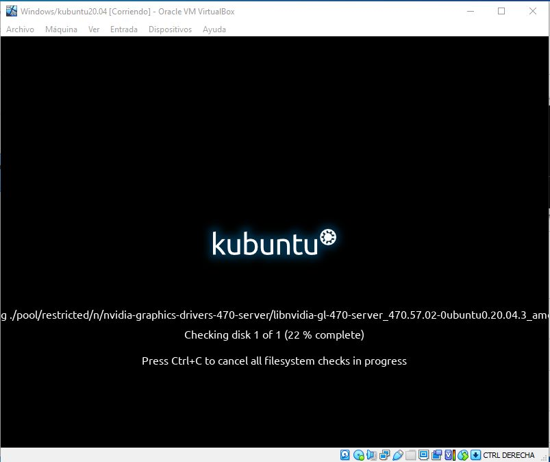

El día de hoy Mateo dió la presentación del Módulo SIRL, a continuación de ello explicó sobre que se llevará a cabo en el curso. Nos comunicó revisar continuamente la página de AULES, ya que toda la información, trabajos, actividades y avisos importantes será mediante la plataforma. También dijo que hagamos el resumen de CULTUBE 3.0 y el diario de la clase de hoy.
⎝ ⏠⏝⏠⎠ [̲̅$̲̅(̲̅ ͡◥▶ ͜ʖ ͡◀◤)̲̅$̲̅] LogBook [̲̅$̲̅(̲̅ ͡◥▶ ͜ʖ ͡◀◤)̲̅$̲̅] ⎝ ⏠⏝⏠⎠
Diario de primera evaluación
Entre a la página de AULES a revisar si estaba matriculados en los Módulos que me faltaban, pero aun me faltan módulos que me aparezcan. Entre al módulo de SIRL para ver si estaba en SIRL presencial, para poder acceder a los trabajos, actividades y avisos. En SIRL presencial leí la Tarea > A teleco's logbook (fill in after every session).
Divulgación sobre sus ideas y experiencia por la pandemia. Expontainidad = Improvisación. Empezó en YT exponiendo sobre la ansiedad, miedo e incertidumbre que pasaban los sanitarios por culpa de la pandemia. Se puso un EPI a mediados de abril de 2020. Hizo su primer video sin editar, ni guión, para poder transmitir por lo que estaba pasando ella y muchos de sus compañeros.
Intento instalar hacer el particionado de Gparted de la práctica, tuve varias complicaciones en el particionado ya que lo hice mas de 10 veces las particiones de la dichosa práctica sin haber explicaciones concretas para poder realizarla. La solución de problemas creo que implimentada en los ya quie en teoría seremos técnicos en una espelización, pero eso no lleva a dudar de la falta de enseñanza y coordinación de tiempos en las horas establecidas. 
Gparted
Conseguí hacer las particiones de la práctica, pero el proble que hay es que se supone que la tengo mal hecha, ya que es las hojas de la práctica a seguir supuestamente detallada (muy mal expresada), no especifíca con detalle los inconvenientes futuros a las hora de acabar el trabajo. Hay que decir los fallos futuros para no hacer perder tiempo en chorradas con video que no vienen al caso e incluso que no son entendibles o inservibles, es decir supuestas ayudas.

Gparted Particionado
Parace ser que he desperdiciados 3 semanas en la práctica anterior como si no hubiera otras cosas que hacer. Continuando la siguiente práctica de la instalación de kubuntu 12.04 también tuve problemas ya que instalé el que no era, tenía que ionstalar Xubuntu 12.04 aun que aun no me queda claro cual era de instalar pero no me importa ya que era del 1º trimestre y esto los estoy escribiendo en mayo del siguiente año, pero en general puedo conseguir instalar desperdiciendo una semana otra vez por confuciones de falta de información. 
Kubuntu
Comencé enseñando lo que tenía ya hecho, que para mi parecer ya había acabado pero con a Mateo de gusta sacar pegas a toido me dice que lo tengo mal hecho, ya que para mi parecer si no se hace algo como el tiene ya pensado que deber estar hecho, para el no le sirve como lo tengas ya sea peor o mejor como lo ha pensado él, pero no pasada nada ya con la instalación del Xubuntu 20.04 de nuevo, le hice una práctica extra que supone que es de sumatoria de puntos con Kubuntu 20.04 y Windows 10, pero me dice de nuevo que esta mal. Lo hice de nuevo y ya la entregué sin más.
Continuo con una práctica nueva que de clonezilla, que a mi parecer me entretuve mucho con esto ya que habían muchos puntos que se pedían, que por cierto los he podido hacer en su gran mayoría, pero que la maquetación de hacer me resultó muy agotadora de hacer, que sin embargo no la hice en esa evaluación ya que he tardado 2 semanas viendo videos en YouTube para saber varias comandos del clonezilla y poder hacer varios puntos de la práctica. Por lo general me resulto muy útil de hacer pero estresante a la vez, ya que se acercaba la fecha de exámen sin saber como sería. Pude hacer la práctica con casi todos los puntos del clonezilla, me atrevería a decir que he sido el que más a avanzado en la práctica pero me da mucha, repito mucha pereza hacer el enmaquetado ya que son más de 280 capturas y estar comentado cada una para que luego no sirva de nada lo que hecho. Como no sabía donde poner un gif, pues lo añado aquí.
Fuí al exámen ya que esta era la fecha indicada en el calendario escolar, por lo general me fue bastante mal. Mi resultado con los test fue malo ya las preguntas son exageradamente largas, muy largas y no hay ser que pueda con esa clase de preguntas y sin contas las respuestas que tenía cada una de ellas y habías varias respuestas posibles, sinceramente ese cuestionario no tine sentido de método de estudio o de evaluación por la información que tiene que es muy excesiva para lo que debe de ser. Por otro lado la hoja del cáculo de la coma flotante no tiene sentido ya que hasta ahora no ha dado una clase de como hacerla ya que los videos que recomineda de Agustin no sirven para nada, repito no sirven para nada. He buscado de como hacer la dichosa coma pero habías más de 5 formas de hacerlo pero como siempre a Mateo no vale como las hice y sigo esperando como se hace la coma flotante.